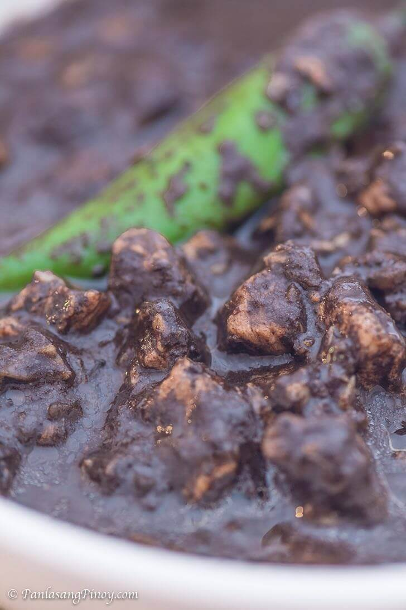

Dinuguan or Filipino Blood Stew is a very popular dish among Filipino.
It is a pork dish cook with pork blood.
Ingredients
- 2 lbs pork shoulder cubes
- 1 1/4 cups pork blood
- 1 piece Knorr Pork Cube
- 2 pieces onion chopped
- 6 cloves garlic minced
- 2 cups water
- 3/4 cup white vinegar
- 3 pieces dried bay leaves
- 3 tablespoons cooking oil
- 1 tablespoon granulated white sugar
- Salt and ground black pepper to taste
Steps
- Heat oil in a cooking pot
- Saute onion for 30 seconds. Add garlic.
Continue to cook until onion softens
- Add pork. Saute for 3 to 5 minutes
- Pour water. Let boil. Add bay leaves and vinegar.
Let the liquid re-boil.
- Add Knorr Pork Cube. Stir. Cover and simmer for 1 hour.
Note: add water as needed
- Add long green peppers and pour pork bloood into the pot.
Stir. Continue to cook between low to medium heat for
15 minutes while stirring ever 3 minutes.
- Add sugar and season with salt and ground black pepper
- Transfer to a serving bowl. Enjoy.
Nutrition Facts
- Calories: 324 kcal (16%)
- Carbohydrates: 7g (2%)
- Protein: 30g (60%)
- Fat: 17g (26%)
- Saturated Fat: 4g (20%)
- Cholesterol: 101 mg (34%)
- Sodium: 279mg (12%)
- Potassium: 595mg (17%)
- Fiber: 1g (4%)
- Sugar: 5g (6%)
- Vitamin A: 125IU (3%)
- Vitamin C: 322.6mg (27%)
- Calsium: 50mg (5%)
- Iron: 2.1mg (12%)